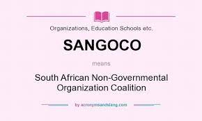

SANGOCO's mission is to promote civil society by uniting and strengthening the NGO sector to enable it to influence development policy and advocate for programs that meet the needs of the poor in the possible way and at the least possible cost.
The effectiveness of our work depends on the organization's governance structures.As professional organizations,We recognize the importance of establishing and maintaining able bodies that will govern the internal functioning of our individual organizations.
Our commitment to promote democracy is enshrined in a culture of participation and complete accountability within our organizations.
Human capacity and skilled leadership are a critical component of the effectiveness of our work.We shall endeavour to follow the best management practices appropriate to the organizations mission,operations and governance structure.